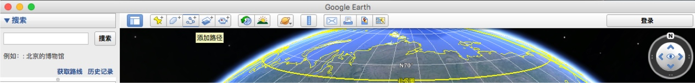
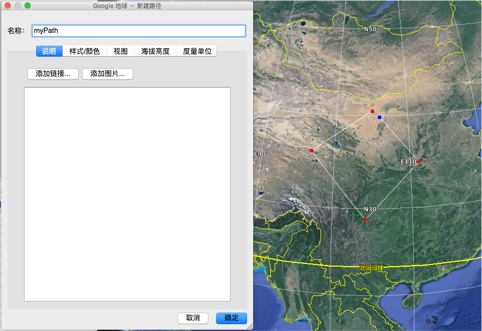
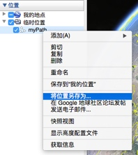
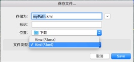
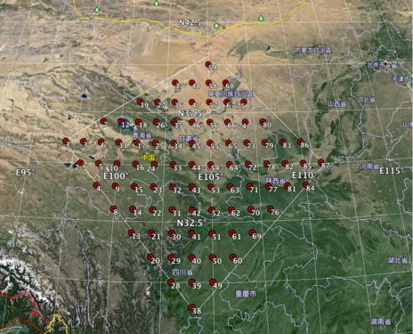
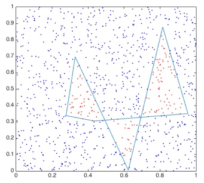

Matlab与Google earth和GMT格式的交互
Google earth
使用google-earth获得范围内的点
一个常见的需求是：怎么样划定一个范围，然后得到范围内的点？这里讲述怎么结合google earth和matlab实现这个功能。
google earth操作步骤：
* 1. 打开软件，缩放到合适的视图，然后点击添加路径：

* 2. 如图，我们添加了5个点，大概组成了一个矩形区域

可以给这个路径命名为myPath，并改变线条的颜色（样式/颜色），点击确定后会保存这个路径。
注意：已经放置的路径点可以用鼠标拖动修改；滚轮可以缩放调节视图，有利于更细节的修改；键盘的上下左右键可以移动视图；右键删除上一个放置的点（如果要删除中间的某个点，先左键单击它，再右键）；如果想插入一个点，先在要插入位置的上一个点左键选中，再在需要插入位置左键点击。
* 3. 上一步中我们保存了名为myPath的路径，在左侧位置可以找到它，右击，选择将位置另存为

文件类型选择kml

这样我们得到了myPath.kml，用matlab代码可以读取
* 4. 用read_kml程序获得点的边界txt文件，保存在paths/路径下
* 5. 用grid_in_bound获得边界内的点，我们寻找所有在边界内的1°×1°的点。
* 6. 用xyz2kml_points把找到的点转为points_myPath.kml文件，导入到google earth中

可以看到，一共有87个点，每个点的编号标注在旁边。
这3个命令在test_kml_data.m中有具体代码。
matlab代码
read_kml(ip_kml,op_dir)
ip_kml为kml文件名称，op_dir为输出路径[LLZ_ind,xyz]=grid_in_bound( BD, LLZ )
获得边界内的点read_kml_to_a_single(ip_kml,op_file)
读取kml文件，写入到一个文件中，每个记录用> 记录名隔开。这种文件适合GMT作图。xyz2kml(op_kml,xy)
将多个线段写成kml文件，输入的xy可以通过命令read_BD_and_name生成。xy包含三个域：xy(ii).x, xy(ii).y, xy(ii).name，当name缺省时，自动转为1：N的字符串xyz2kml_points(op_kml,xy,o_namelist)
将多个点写成kml文件。xy形状为(N,2)，o_namelist{ii}为结构体xy=read_BD_and_name(ipdir,namepattern)
例如：read_BD_and_name(‘a/','*txt')，专门供xyz2kml使用，生成其需要的xy
批量处理模板: 从kml到mask
clear;
ip_kml = 'wang-Remote-sensing.kml';
bd_dir = 'BD';
op_xy = 'xy_with_nu.mat';
op_mask = 'mask_wang.mat';
iact = 4;
if iact == 1 % 1: kml2xyz
read_kml(ip_kml,bd_dir)
elseif iact == 2 % plot all
xy=read_BD_and_name(bd_dir,'*txt');
% xy = xy([6,7,4,8,2,3,5,1]); % re-order
Nxy = numel(xy);
ik = 0;
for ii = 1:Nxy
xy(ii).group = ii;
end
save( op_xy, 'xy')
elseif iact == 3 % generate group number
load(op_xy);%'xy');
Nxy = numel(xy);
% plot boundary and number
for ii = 1:Nxy
plot(xy(ii).x,xy(ii).y)
h = text(mean(xy(ii).x),mean(xy(ii).y),num2str(xy(ii).group));
set( h,'color','r','fontsize',14)
hold on;
end
all_plot('coast');
hold off
elseif iact == 4 % generate mask
load(op_xy);% 'xy');
OBS = mlonmlat(8);
Nfile = numel(xy);
LLZ_mask = OBS;
LLZ_mask.rg = zeros(size(LLZ_mask.lon));
for ii = 1:Nfile
info(ii).name = xy(ii).name;
info(ii).nu = xy(ii).group;
BD = [xy(ii).x,xy(ii).y];
[LLZ_ind0,vLLZ]=grid_in_bound( BD, OBS );
LLZ_mask.rg(LLZ_ind0.rg==1) = xy(ii).group;
end
LLZ_mask2 = LLZ_mask;
LLZ_mask2.rg(LLZ_mask2.rg==0) = NaN;
rg_plot(LLZ_mask2);
myaxis('tibet-L');
% save(op_mask,'LLZ_mask','info')
end
判断在边界内部：inpolygon
一个附带的常见需求是求出边界内部的点。matlab自带的函数inpolygon可以解决这个问题
一个自带的例子：
xv = rand(6,1); yv = rand(6,1);
xv = [xv ; xv(1)]; yv = [yv ; yv(1)];
x = rand(1000,1); y = rand(1000,1);
in = inpolygon(x,y,xv,yv);
plot(xv,yv,x(in),y(in),’.r’,x(~in),y(~in),'.b')

GMT
matlab代码
xys=read_segments(ip_xy)
从片段文件中（>隔开）读取各个片段，组成xys(ik)，包含域.x, .y, .name